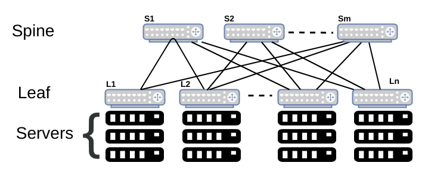

Datacenter Networks

- In most datacenters, 30-50% utilization is considered "good"
- Why is it difficult to get efficient server utilization?
- Datacenters have to keep it low utilization to keep enough compute in reserve for spikes in utilization
- Also has for fault tolerance
- Uneven application fit
- Each server has CPU / memory / disk and most applications exhaust one resource and not the others
Role of the Network:
- Enable high server utilization by getting servers across the datacenter to be able to communicate effectively with one another
- Turn the servers into a single large fungible pool of resources
- Don't make the developer think about where their application is
- Provide the illusion of "one big switch" no matter where the servers are in the datacenter
- We'll have to implement it with smaller switches
- When measuring latency, we not only care about average latency but also tail latency
- I.e. 99.9th percentile latency (three 9s)
Tree Topology
- We have redundancy to provide failure resiliency (so there are multiple ways to communicate with a server)
- We run into a problem of imbalanced uplinks vs downlinks
- Say five servers want to communicate with another server (i.e. some controller)
- Then, the switch above the server is getting 4 incoming and only 1 outgoing, which causes inefficiencies because of the imbalance
- As we get higher up in the tree, we could get something like 200:1 imbalance
- If these tree networks are statically provisioned:
- This was common back in the early days
- Then if half of your serverse aren't doing work, then there's an efficiency issue
- How do we get a more dynamic allocation?
- Decouple ip address from location
- Before, we had a specific chunk of the datacenter be this IP address
- Adding new servers would require you to update a bunch of routers' routing tables
- Instead, we will virtualize everything
- We will have our own layer over IP addresses to not treat them as physical locations but as just names
Virtual Layer 2 (VL2) Switch
Goals:
- Uniform high capacity
- Maximum rate of server-to-server traffic flow should only be limited by capacity on NICs
- Assinging servers to service should be independent of network topology
- Performance isolation
- Traffic of one service should not affect others
- Routing / addressing
- Easily assign any server to any service
- VM keeps the same IP address even after migration
Key Ideas:
- Use Clos topology to connect servers
- Valiant load balancing to provide high bisection bandwidth across multiple paths
- Name / location separation
Graphs:

- There are a ton of small flows
- But most bytes are part of a very large flow
- We'll see later ML workflows are not like this
Traffic Matrix Analysis
- Can we predict based on the past the amount of traffic between two servers?
- Hard to do this because we wanted to isolate the applications from the servers they are running on
- The pattern changes nearly constantly with no periodicity and a lot of randomness
Clos Topology
- Use a huge number of paths
- We organize switches in two layers
- A bunch of servers are all connected to some leaf switch (aggregation router)
- The layer above the leaf switch is called the spine
- The spine and leaf form a fully connected network
- We create so many paths between two layers that we can create non-blocking performance
- Emulates just having a big switch

Routing
- We have a lot of redundancy in routing
- We want to load balance
- We can't just use what is on the Internet
- This won't load balance
- We would have to send tons and tons of routing entries / messages, but this doesn't scale well when N is going to the millions
- We want something cheap and simple that we can deploy at scale
- We can just use randomness to distribute among all paths that ahve the same cost
- How do we decide when to keep a flow on the same route?
- I.e. there are some flows sensitive to reordering that we might want to stay on the same path
- If you have TCP, you should keep that flow entirely on the same path rather than split up the packets
- With this, we can hash a 5-tuple of the packet header information and then modulo it by number of equal cost paths to get which path to send it along
- This does lead to suboptimal balancing
- Elephant (super large) flows are a problem and also hash collisions
- Are hash collisions a problem?
- We can set up our network so that the uplinks of our switches are a lot higher capacity than our downlinks

- Intuition for why this mitigates hash collision problem:
- Imagine we have 20 bins each with size 1 and we throw 10 balls in
- Or we have 2 bins each with size 10 and we throw 10 balls in
- What is probability of staying within capacity?
- First: 3.27%
- Second: 99.95%